11 第10次课—初级绘图函数plot
12 plot函数简单用法: Generic X-Y Plotting
以R语言自带的mtcars数据集为例
Code
plot(mtcars$wt)#当只有一个参数时，索引与值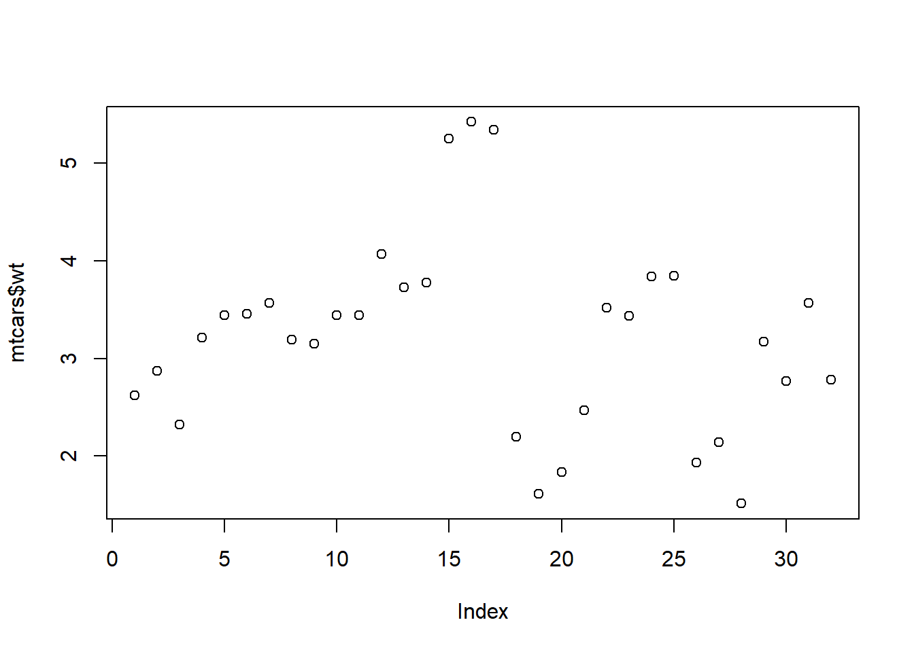
Code
plot(mtcars$wt, mtcars$mpg)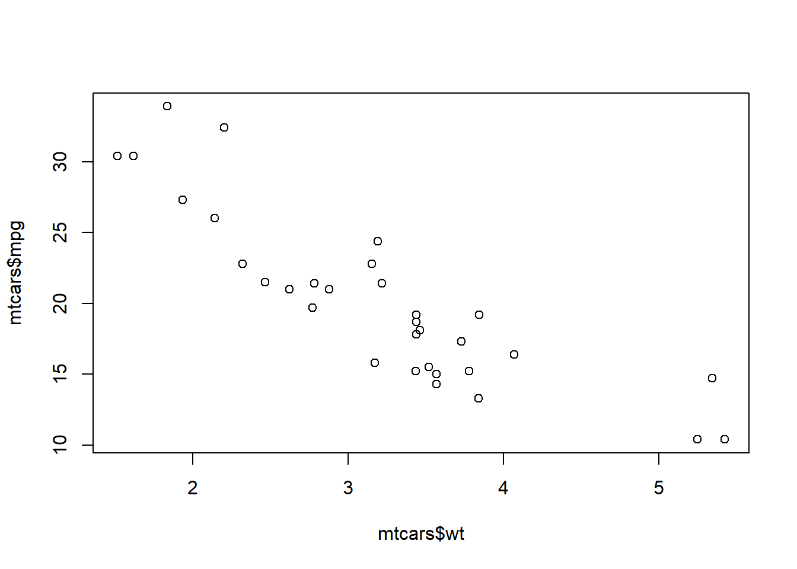
Code
plot(mtcars)#也就是所谓的图集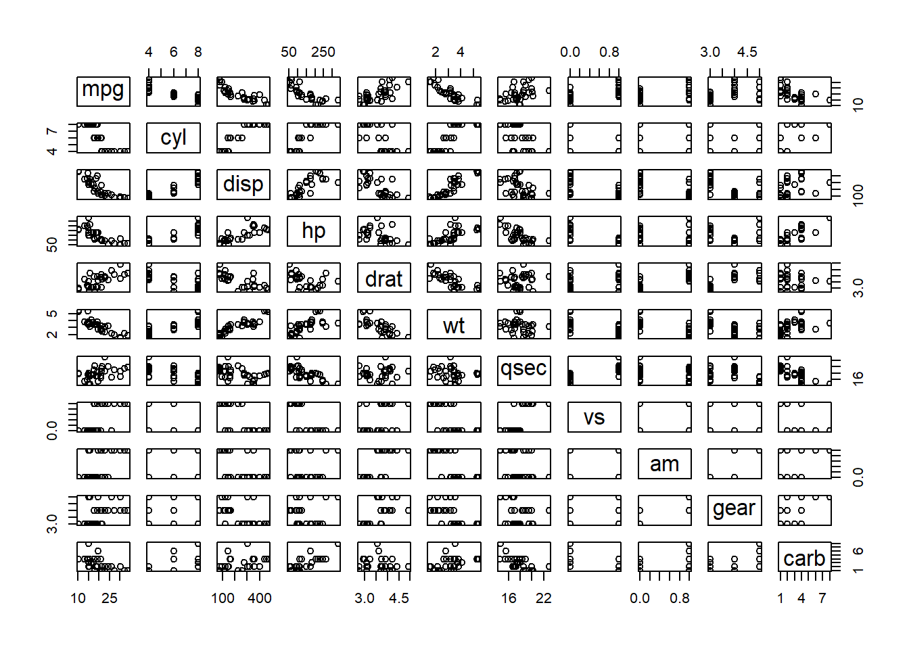
13 （一）修改图形主体部分
修改类型
增加一个type参数，即可修改图形的类型了

Code
plot(mtcars$wt, mtcars$mpg,type = "p")#点图
Code
plot(mtcars$wt, mtcars$mpg,type = "l")#折线图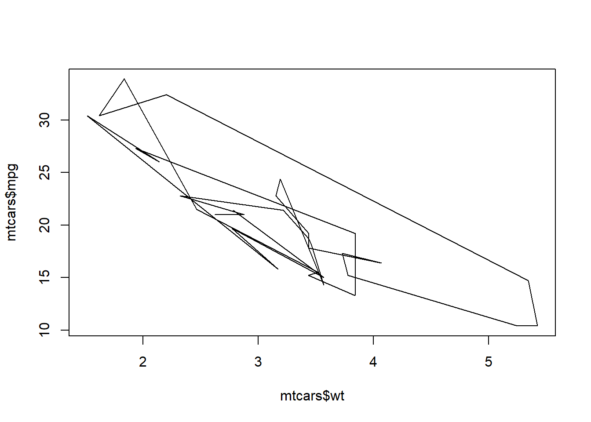
Code
plot(mtcars$wt, mtcars$mpg,type = "b")#点折线图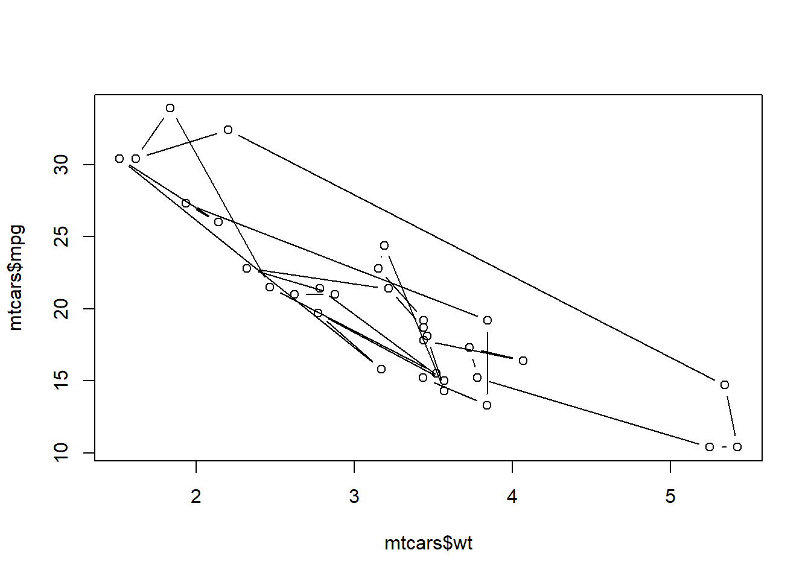
Code
plot(mtcars$wt, mtcars$mpg,type = "o")#连点图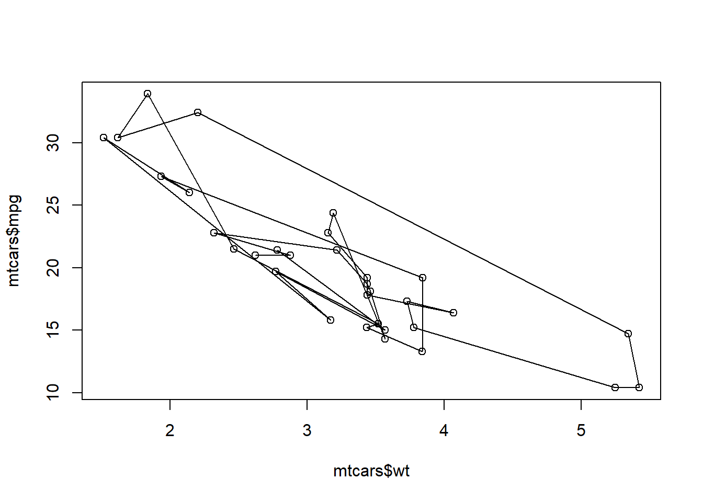
Code
plot(mtcars$wt, mtcars$mpg,type = "h")#垂直图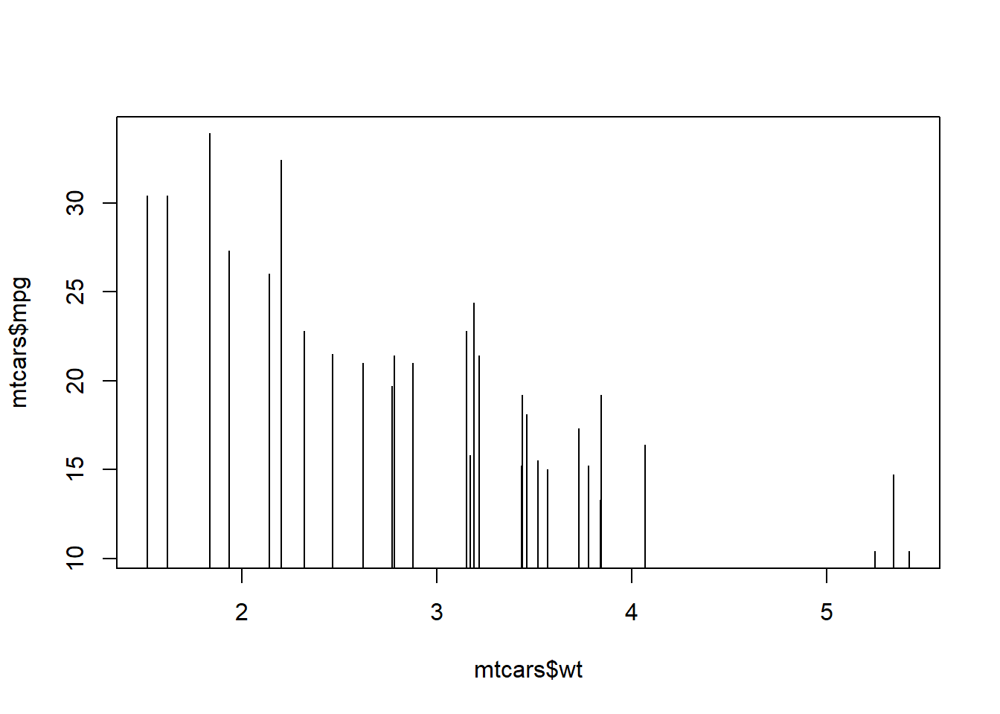
Code
plot(mtcars$wt, mtcars$mpg,type = "s")#阶梯图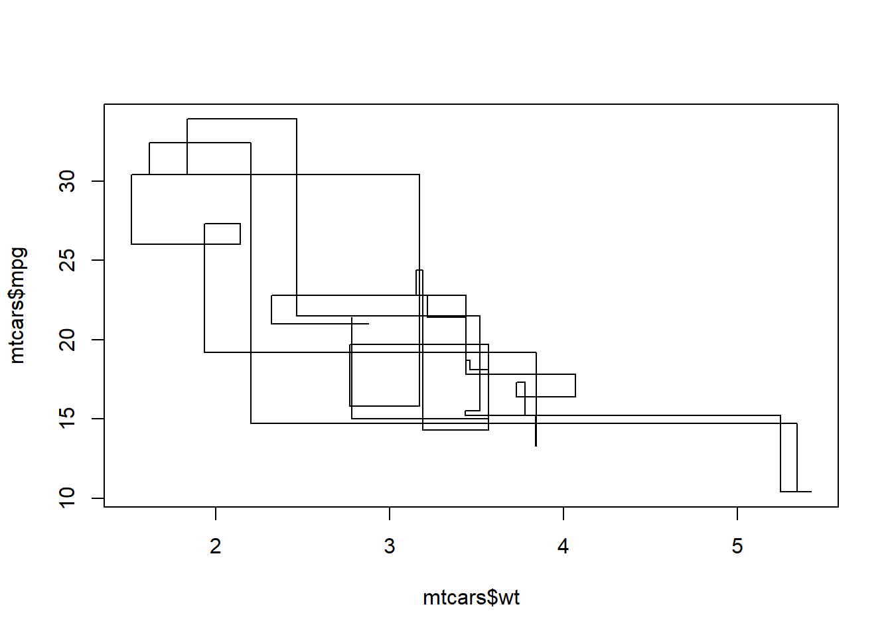
14 （二）修改图像元素大小
cex : 修改点图中点的大小 lwd ：修改线图中线的粗细
Code
plot(mtcars$wt, mtcars$mpg,cex=1)
Code
plot(mtcars$wt, mtcars$mpg,cex=2)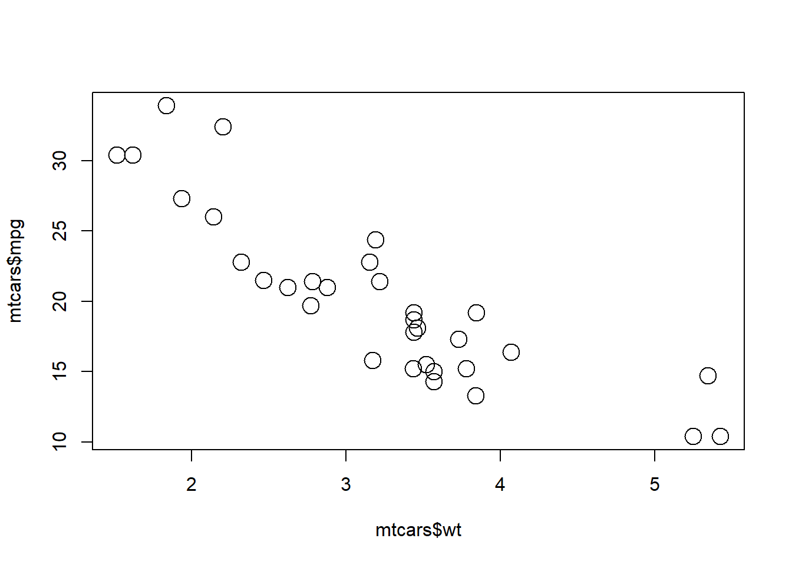
15 （三）修改图形元素的形状
pch： 修改点的类型
lty ：修改线条的类型
Code
plot(mtcars$wt, mtcars$mpg,pch=1)
Code
plot(mtcars$wt, mtcars$mpg,pch=2)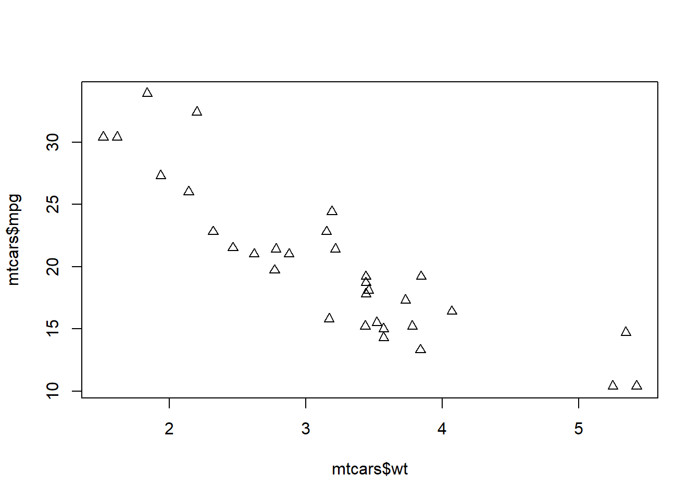


16 （四）修改图形元素的颜色
col： 设置颜色
-col： 取值可以是颜色名称如”blue”，RGB值如rgb(0,0,1)，颜色代码如”#0000FF”
-运行colours()可以获取颜色的名称，总共有657种 
-运行rainbow(n)可以获得n种彩虹色
Code
plot(mtcars$wt, mtcars$mpg,cex=3,pch=1,col=rainbow(10))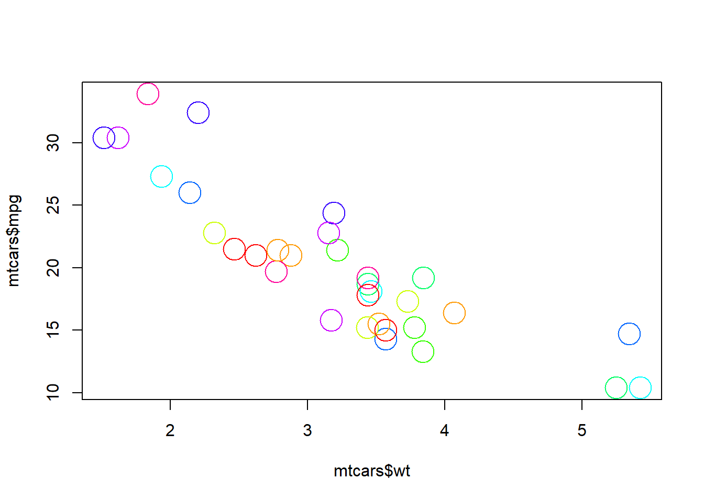
Code
plot(mtcars$wt, mtcars$mpg,cex=3,pch=1,col=as.factor(mtcars$vs))#根据发动机排列类型标记颜色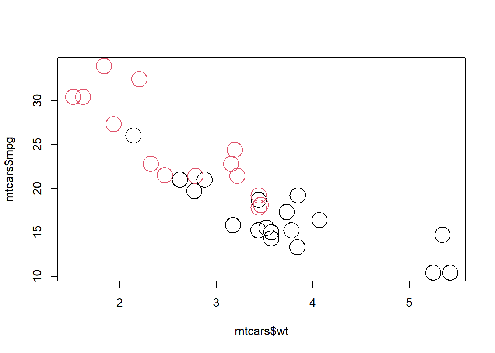
17 （五）设置图形标题
main：设置主标题
sub：设置次标题
xlab：设置x轴标题
ylab：设置y轴标题
Code
plot(mtcars$wt, mtcars$mpg,
cex=3,pch=1,col=rainbow(10),
xlab = "Weight",
ylab="Miles per gallon"
)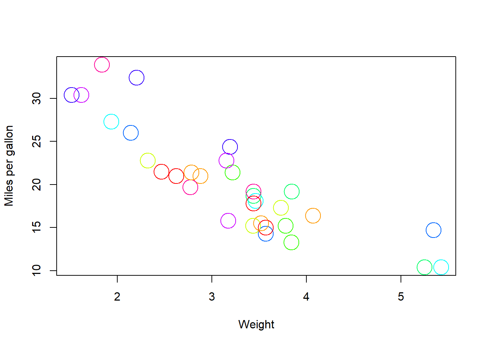
18 （六）修改文字大小
cex.axis : 坐标轴刻度文字大小
cex.lab: 坐标轴标题文字大小
cex.main ： 主标题文字大小
cex.sub ：次标题文字大小
19 （七）修改文字字体
font.axis : 设置坐标刻度字体，1常规字体，2加粗字体，3斜体字，4斜体加粗
font.lab：设置坐标轴标题字体，取值同font.axis
font.main ：设置主标题字体，取值同font.axis
font.sub ：设置次标题字体，取值同font.axis
family：设置字体样式系列，family = ‘serif’，family = ‘sans’，family = ‘mono’
20 （八）添加标题和禁用标题
ann = FALSE : 设置之后即可不显示原标题
title() : 使用title()函数可以为图形另外设置标题，其参数与plot()函数中设置标题的参数相同
Code
plot(mtcars$wt, mtcars$mpg,
cex=3,pch=1,col=rainbow(10),
xlab = "Weight",
ylab="Miles per gallon",
ann=F
)
plot(mtcars$wt, mtcars$mpg,
cex=3,pch=1,col=rainbow(10),
xlab = "Weight",
ylab="Miles per gallon",
ann=F
)
title(xlab = "Weight",
col.lab = "orange",
cex.lab = 1.5, font.lab = 3)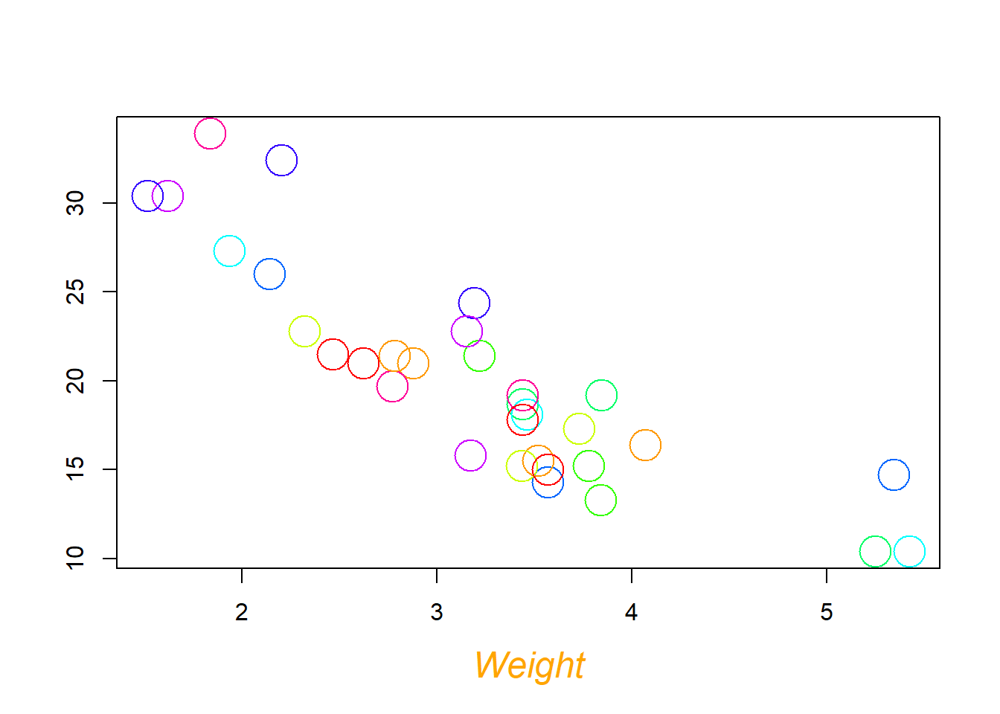
21 （九）隐藏框架线及坐标轴
fram.plot = FALSE ： 隐藏框架线
xaxt = “n” ： 隐藏X轴，会留下框架
yaxt = “n” ： 隐藏Y轴，会留下框架
axes=FALSE：隐藏所有坐标轴及框架线
22 （十）设置坐标轴取值范围
xlim: 设置x轴取值范围
ylim： 设置y轴取值范围
Code
plot(mtcars$wt, mtcars$mpg,
cex=1,pch=1,col=rainbow(10),
xlab = "Weight",
ylab="Miles per gallon",
ylim=c(0,35),
xlim=c(0,6)
)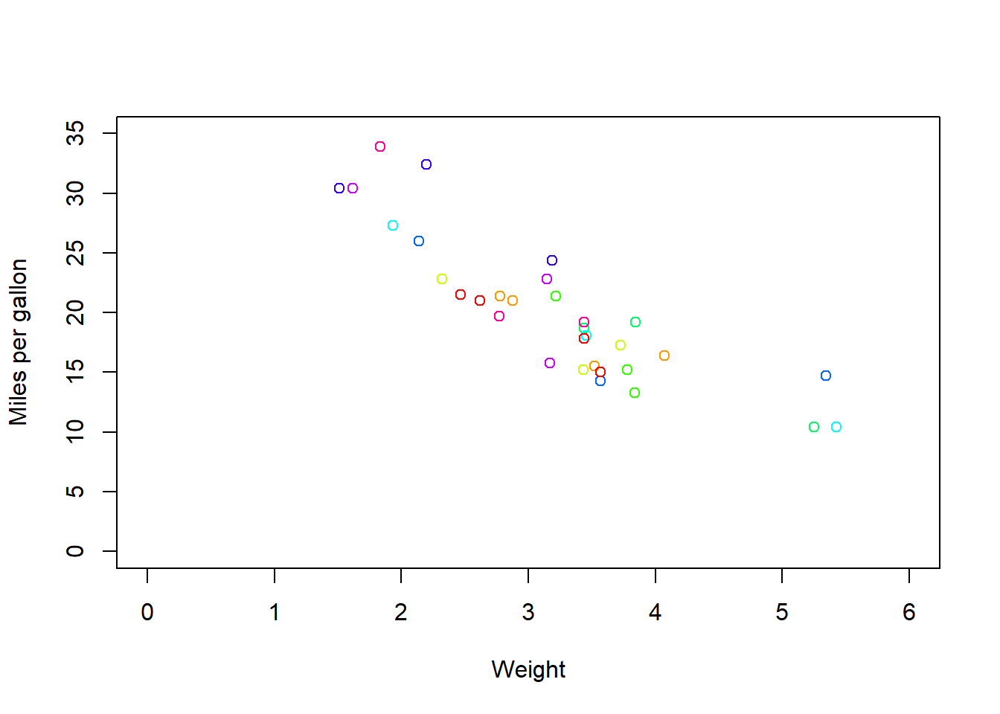
23 （十一）修改图形整体尺寸大小
通过par()函数进行调节
no.readonly = TRUE : 设置画板的参数为可修改状态
pin: 以英寸表示的图形尺寸（宽和高）
mai: 以数值向量表示的边界大小，顺序为“下、左、上、右”，单位为英寸
mar: 以数值向量表示的边界大小，顺序为“下、左、上、右”，单位为英分。默认（5,4,4,2）+ 0.1
Code
opar <- par(no.readonly = TRUE)
par(pin = c(3,5), mar = c(5,8,2,6))
plot(mtcars$wt, mtcars$mpg,
cex=1,pch=1,col=rainbow(10),
xlab = "Weight",
ylab="Miles per gallon",
ylim=c(0,35),
xlim=c(0,6)
)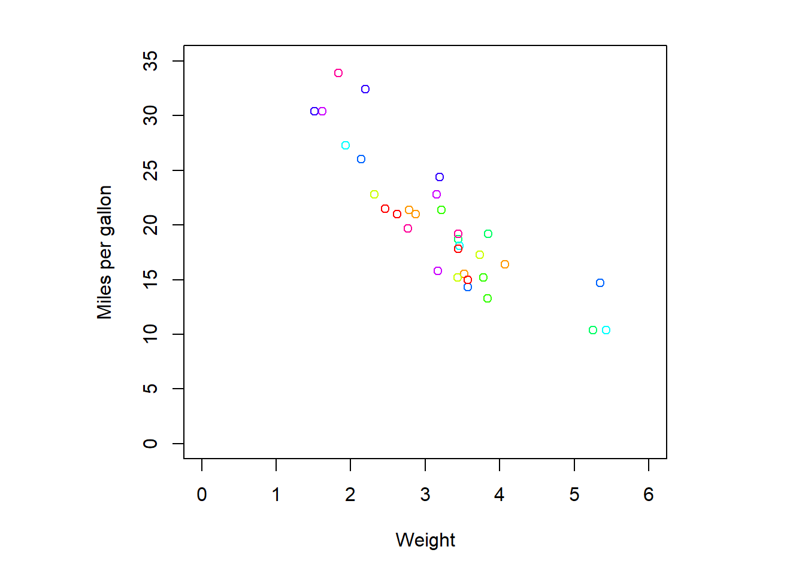
Code
par(opar)24 （十二）给图形添加参考线
通过abline()函数添加
参数
v : 垂直参考线的位点
h : 水平参考线的位点
lty: 参考线的样式
col：参考线的颜色
Code
plot(mtcars$wt, mtcars$mpg,
cex=1,pch=1,col=rainbow(10),
xlab = "Weight",
ylab="Miles per gallon",
ylim=c(0,35),
xlim=c(0,6)
)
abline(v = seq(0,6,1), h = seq(0,35,5), lty = 3, col = "blue")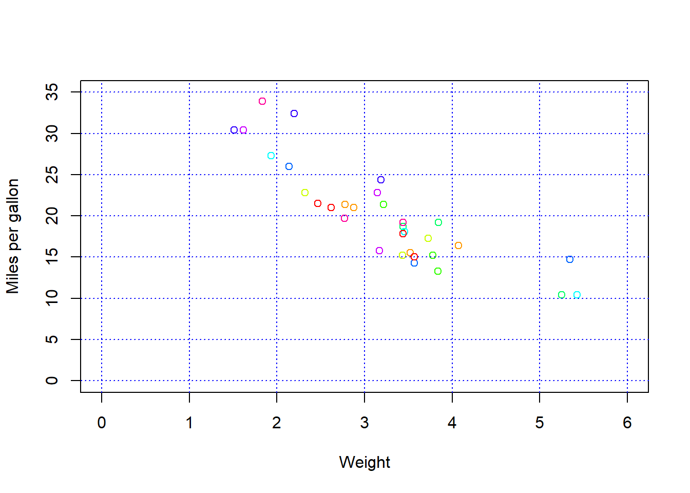
25 （十三）添加文本
text()向绘图区域内部添加文本
text(x, y , labels , pos , cex , col )
x: 标注位点的横坐标
y : 标注位点的纵坐标
labels: 所要添加的标注内容
pos: 标注所在相对位置，1，2，3，4 分别代表下，左，上，右
cex: 字体大小
col: 字体颜色
mtext()向图形四个边界之一添加文本
labels : 所要添加的标注内容
side : 1,2,3,4分别代表下，左，上，右四个边界
line : 相对边界线的偏移距离
las : 标注文字的方向，0，1，垂直或水平
26 （十四）组合多个图形
使用par()中的mfrow与mfcol参数组合图形
Code
attach(mtcars)
opar <- par(no.readonly = TRUE)
par(mfrow = c(2,2))
plot(wt, mpg,
cex=1,pch=1,col=rainbow(10),
xlab = "Weight",
ylab="Miles per gallon",
ylim=c(0,35),
xlim=c(0,6)
)
abline(v = seq(0,6,1), h = seq(0,35,5), lty = 3, col = "blue")
hist(mpg)#频率图
plot(am,mpg)#散点图
plot(as.factor(am),mpg)#箱线图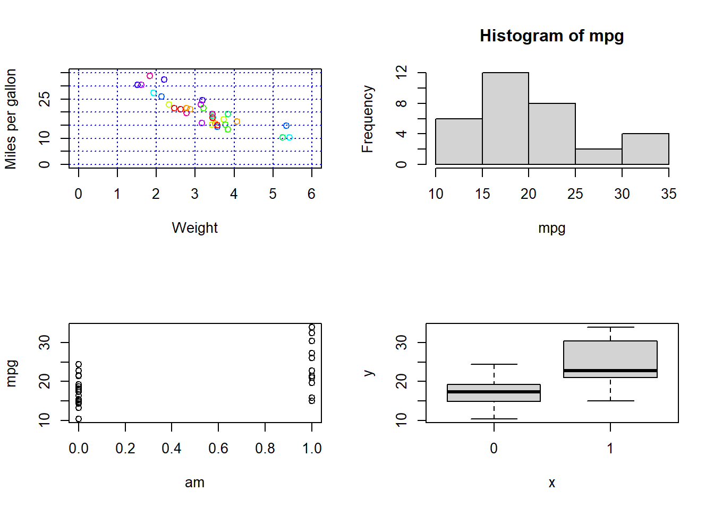
Code
par(opar)
detach(mtcars)27 （十五）精细调整各图形的比例
使用函数layout()组合图形
mat : 一个矩阵，设置图形的总体布局
widths: 向量，设置图形矩阵中每列相对宽度
heights: 向量，设置图形矩阵中每行的相对高度
Code
attach(mtcars)
layout(matrix(c(1,1,2,3), 2, 2, byrow = TRUE))
plot(wt~mpg)
hist(mpg)
plot(as.factor(am),mpg)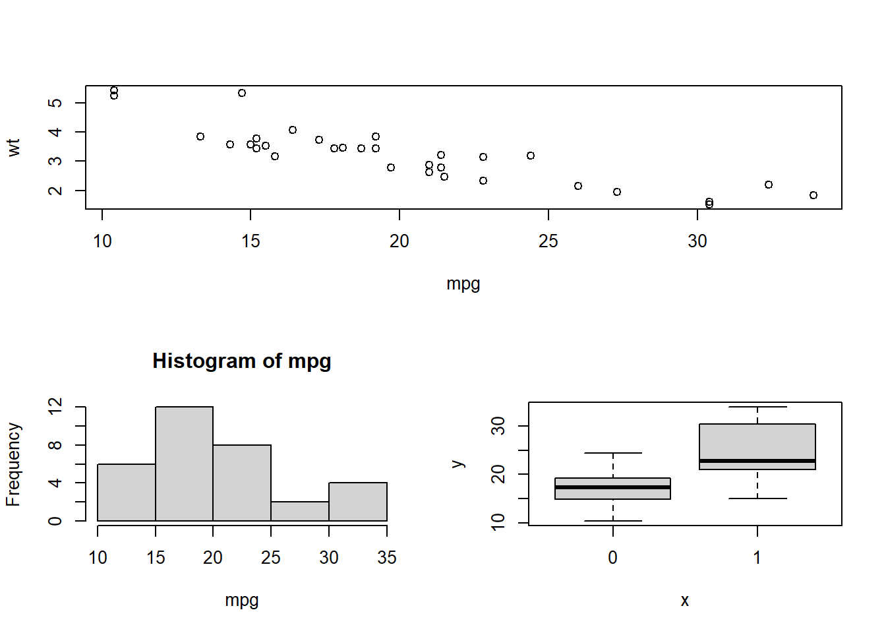
Code
detach(mtcars)28 （十六）par()中fig参数设置图形位置,叠加图形
fig
整个画布大可以理解为fig = c(0,1,0,1), 向量中的4个数依次代表：x轴起始位置0，x轴结束位置1，y轴起始位置0，y轴结束位置1
把图形摆放在画面由半部分，设置fig = c(0.5,1,0,1)
把图放在右上四分之一的位置，设置fig = c(0.5,1,0.5,1)
Code
attach(mtcars)
opar <- par(no.readonly=TRUE)
par(fig=c(0, 0.8, 0, 0.8))
plot(wt, mpg,
xlab="Miles Per Gallon",
ylab="Car Weight")
par(fig=c(0, 0.8, 0.55, 1), new=TRUE)#new 表示在原有图形上加图
boxplot(wt, horizontal=TRUE, axes=FALSE)
par(fig=c(0.65, 1, 0, 0.8), new=TRUE)
boxplot(mpg, axes=FALSE)
mtext("Enhanced Scatterplot", side=3, outer=TRUE, line=-3)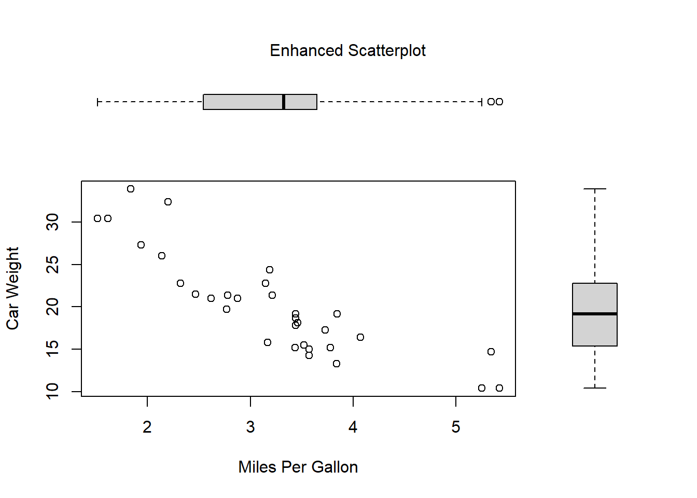
Code
par(opar)
detach(mtcars)29 （十七）以鸢尾花数据集为例子，讲解最简单的线性模型和多图形绘制
- 按品种分类，分别拟合花萼长度与花萼宽度的关系
Code
# species 1
sp1 <- iris[iris$Species=="setosa",]
lm.fit1 <- lm(Sepal.Length~Sepal.Width,data=sp1)
summary(lm.fit1)
Call:
lm(formula = Sepal.Length ~ Sepal.Width, data = sp1)
Residuals:
Min 1Q Median 3Q Max
-0.52476 -0.16286 0.02166 0.13833 0.44428
Coefficients:
Estimate Std. Error t value Pr(>|t|)
(Intercept) 2.6390 0.3100 8.513 3.74e-11 ***
Sepal.Width 0.6905 0.0899 7.681 6.71e-10 ***
---
Signif. codes: 0 '***' 0.001 '**' 0.01 '*' 0.05 '.' 0.1 ' ' 1
Residual standard error: 0.2385 on 48 degrees of freedom
Multiple R-squared: 0.5514, Adjusted R-squared: 0.542
F-statistic: 58.99 on 1 and 48 DF, p-value: 6.71e-10Code
plot(sp1$Sepal.Width,sp1$Sepal.Length)
abline(lm.fit1)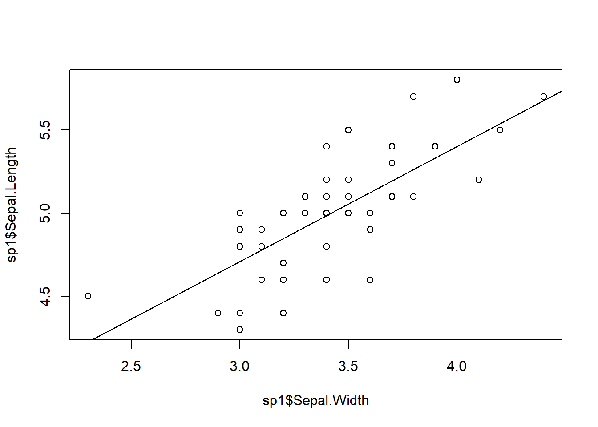
Code
# species 2
unique(iris$Species)[1] setosa versicolor virginica
Levels: setosa versicolor virginicaCode
sp2 <- iris[iris$Species=="versicolor",]
lm.fit2 <- lm(Sepal.Length~Sepal.Width,data=sp2)
summary(lm.fit2)
Call:
lm(formula = Sepal.Length ~ Sepal.Width, data = sp2)
Residuals:
Min 1Q Median 3Q Max
-0.73497 -0.28556 -0.07544 0.43666 0.83805
Coefficients:
Estimate Std. Error t value Pr(>|t|)
(Intercept) 3.5397 0.5629 6.289 9.07e-08 ***
Sepal.Width 0.8651 0.2019 4.284 8.77e-05 ***
---
Signif. codes: 0 '***' 0.001 '**' 0.01 '*' 0.05 '.' 0.1 ' ' 1
Residual standard error: 0.4436 on 48 degrees of freedom
Multiple R-squared: 0.2766, Adjusted R-squared: 0.2615
F-statistic: 18.35 on 1 and 48 DF, p-value: 8.772e-05Code
plot(sp2$Sepal.Width,sp2$Sepal.Length)
abline(lm.fit2)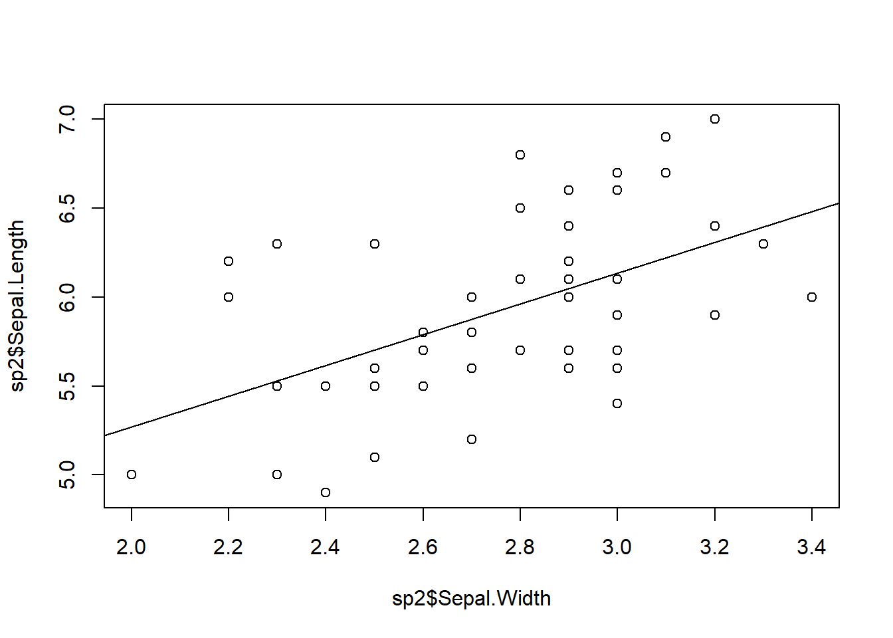
Code
# species 3
unique(iris$Species)[1] setosa versicolor virginica
Levels: setosa versicolor virginicaCode
sp3 <- iris[iris$Species=="virginica",]
lm.fit3 <- lm(Sepal.Length~Sepal.Width,data=sp3)
summary(lm.fit3)
Call:
lm(formula = Sepal.Length ~ Sepal.Width, data = sp3)
Residuals:
Min 1Q Median 3Q Max
-1.26067 -0.36921 -0.03606 0.19841 1.44917
Coefficients:
Estimate Std. Error t value Pr(>|t|)
(Intercept) 3.9068 0.7571 5.161 4.66e-06 ***
Sepal.Width 0.9015 0.2531 3.562 0.000843 ***
---
Signif. codes: 0 '***' 0.001 '**' 0.01 '*' 0.05 '.' 0.1 ' ' 1
Residual standard error: 0.5714 on 48 degrees of freedom
Multiple R-squared: 0.2091, Adjusted R-squared: 0.1926
F-statistic: 12.69 on 1 and 48 DF, p-value: 0.0008435Code
plot(sp3$Sepal.Width,sp3$Sepal.Length)
abline(lm.fit3)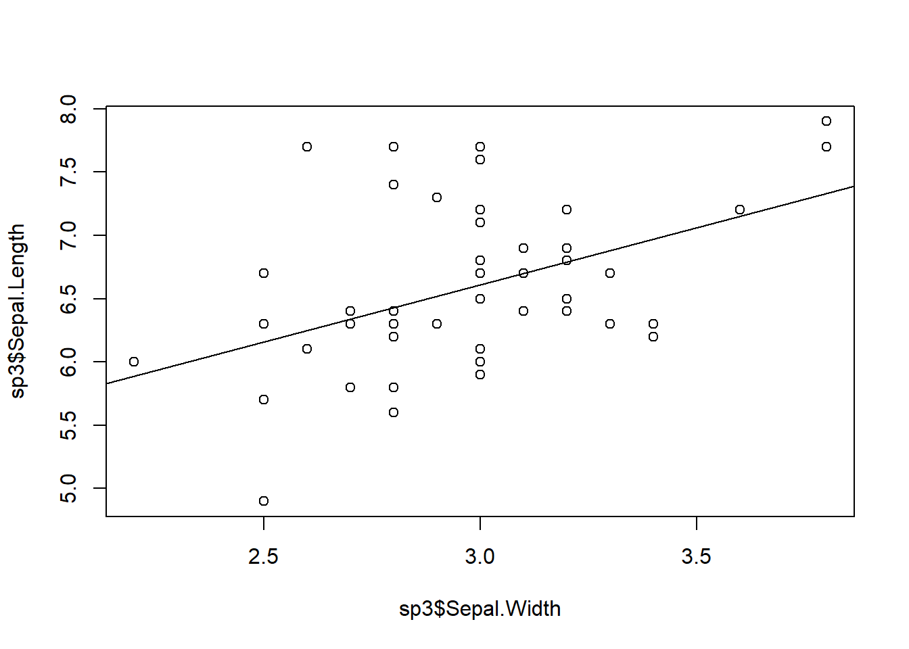
Code
###############################
names(iris)[1] "Sepal.Length" "Sepal.Width" "Petal.Length" "Petal.Width" "Species" Code
library(dplyr)
lms <- iris %>%
group_by(Species) %>%
do(broom::tidy(lm(Sepal.Length ~ Sepal.Width, .)))
lms# A tibble: 6 × 6
# Groups: Species [3]
Species term estimate std.error statistic p.value
<fct> <chr> <dbl> <dbl> <dbl> <dbl>
1 setosa (Intercept) 2.64 0.310 8.51 3.74e-11
2 setosa Sepal.Width 0.690 0.0899 7.68 6.71e-10
3 versicolor (Intercept) 3.54 0.563 6.29 9.07e- 8
4 versicolor Sepal.Width 0.865 0.202 4.28 8.77e- 5
5 virginica (Intercept) 3.91 0.757 5.16 4.66e- 6
6 virginica Sepal.Width 0.902 0.253 3.56 8.43e- 4- 通过par(mfrow函数)把花萼长度与花萼宽度的关系图放到一起
Code
par(mfrow=c(1,3))# one row, three cols
plot(sp1$Sepal.Width,sp1$Sepal.Length)
abline(lm.fit1)
plot(sp2$Sepal.Width,sp2$Sepal.Length)
abline(lm.fit2)
plot(sp3$Sepal.Width,sp3$Sepal.Length)
abline(lm.fit3)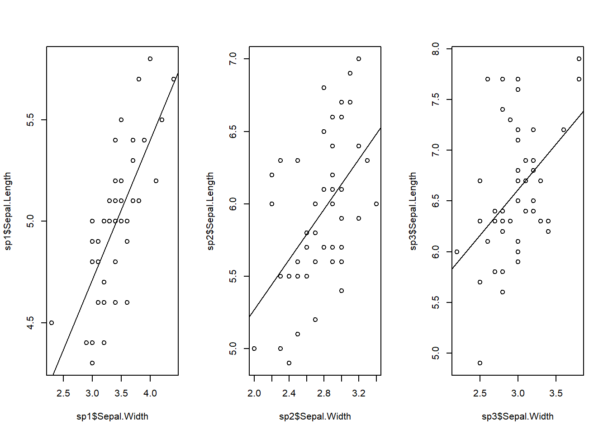
- 通过layout(mat函数)集中展现图形
Code
layout(matrix(c(1,2,3,4), 2, 2, byrow = TRUE))
plot(iris$Sepal.Width,iris$Sepal.Length)
abline(lm(iris$Sepal.Length~iris$Sepal.Width))
plot(sp1$Sepal.Width,sp1$Sepal.Length)
abline(lm.fit1)
plot(sp2$Sepal.Width,sp2$Sepal.Length)
abline(lm.fit2)
plot(sp3$Sepal.Width,sp3$Sepal.Length)
abline(lm.fit3)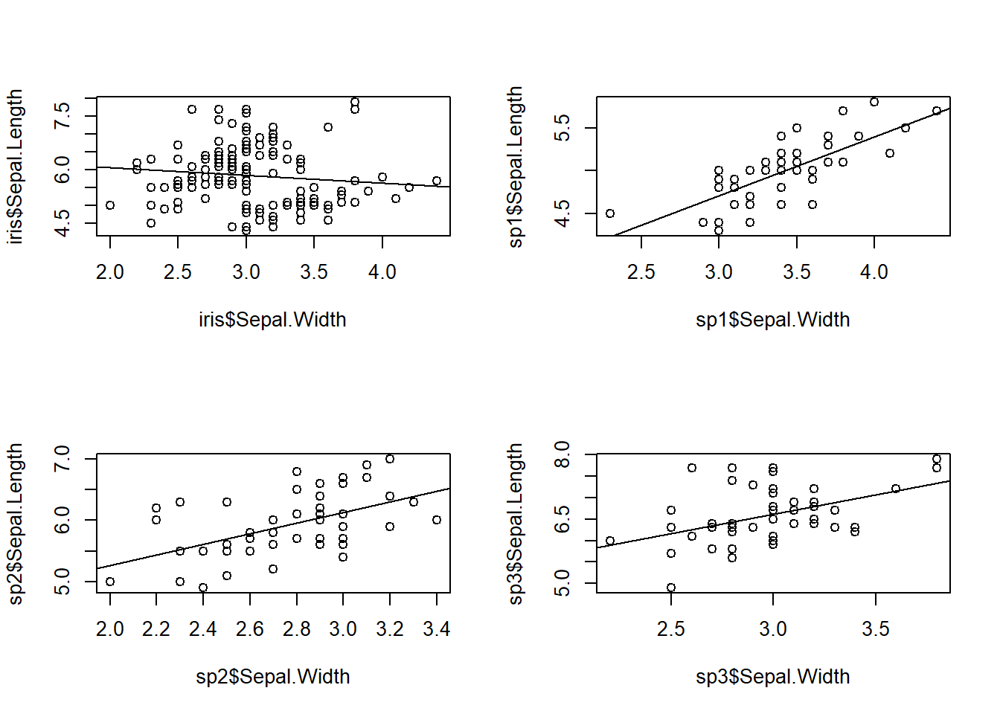
Code
layout(matrix(c(1,1,1,2,3,4), 2, 3, byrow = TRUE))
plot(iris$Sepal.Width,iris$Sepal.Length)
abline(lm(iris$Sepal.Length~iris$Sepal.Width))
plot(sp1$Sepal.Width,sp1$Sepal.Length)
abline(lm.fit1)
plot(sp2$Sepal.Width,sp2$Sepal.Length)
abline(lm.fit2)
plot(sp3$Sepal.Width,sp3$Sepal.Length)
abline(lm.fit3)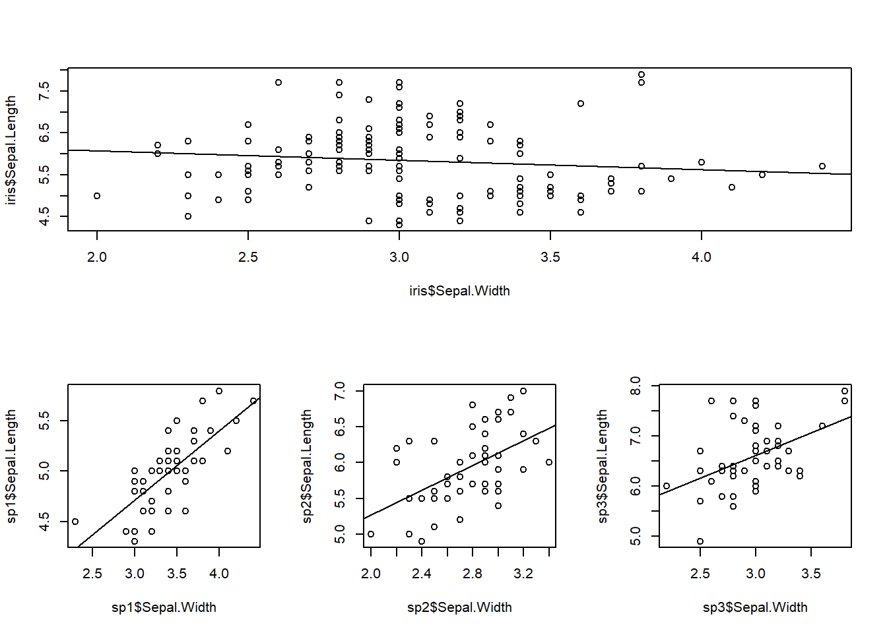
多窗口展示图形可以用函数dev.new()，然后绘图函数如plot()，关闭图形窗口，可以用graphics.off()
课堂练习：生成二维随机正态数，分别绘制数值散点图和边缘分布
Code
set.seed(123)
x=rnorm(500)
set.seed(110)
y=rnorm(500)
opar <- par(no.readonly=TRUE)
par(fig=c(0, 0.8, 0, 0.8))
plot(x,y)
par(fig=c(0, 0.8, 0.55, 1), new=TRUE)
plot(density(x),axes=F,frame.plot=F, xlab="", ylab="",main="")
par(fig=c(0.65, 1, 0, 0.8), new=TRUE)
plot(density(y)$y,density(y)$x,axes=F,frame.plot=F, xlab="", ylab="",main="",type = "l")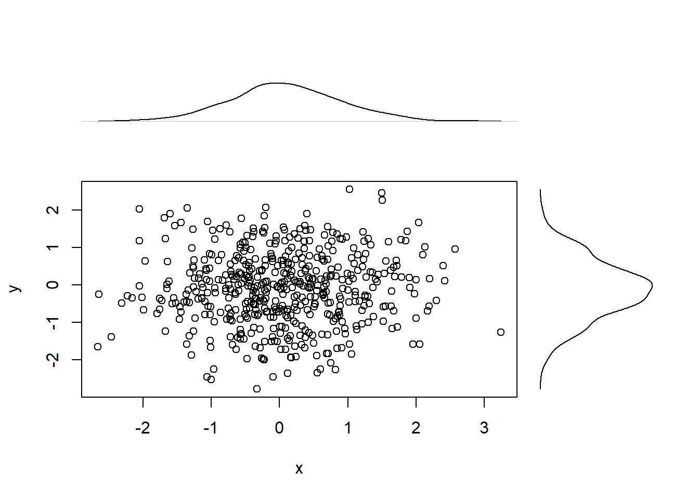
Code
par(opar)